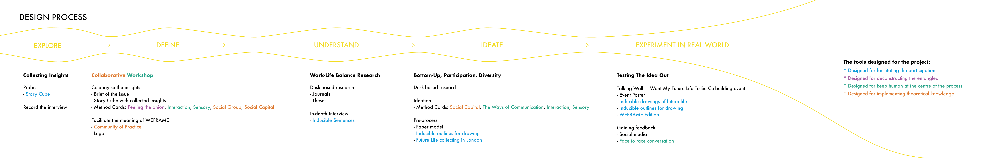
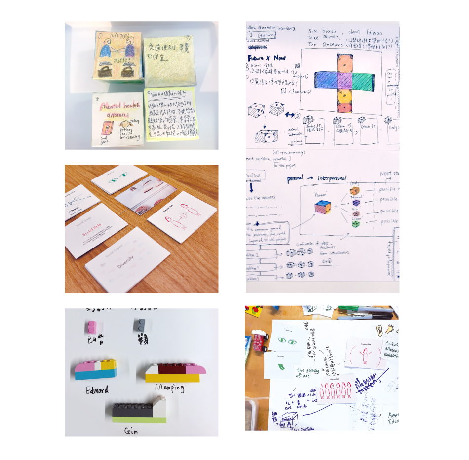
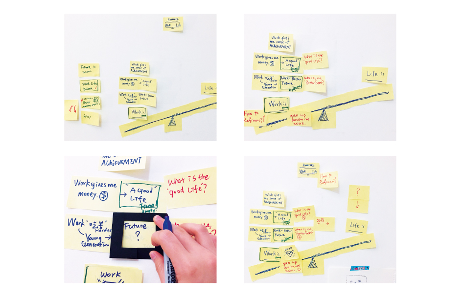
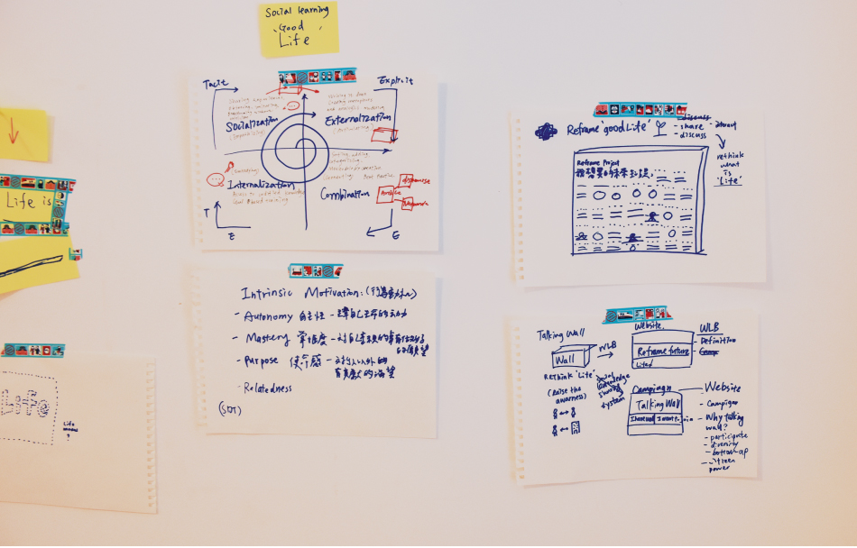
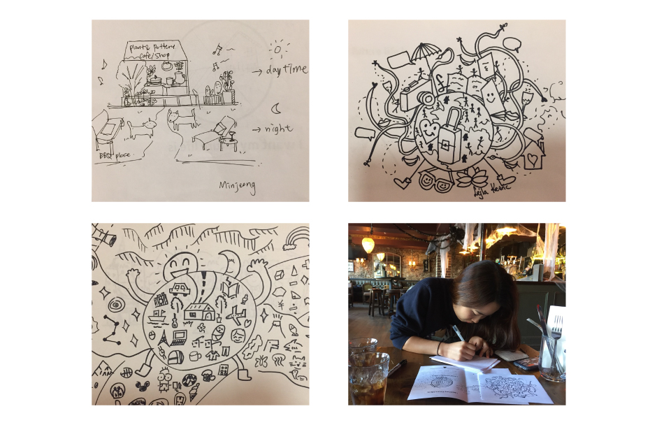
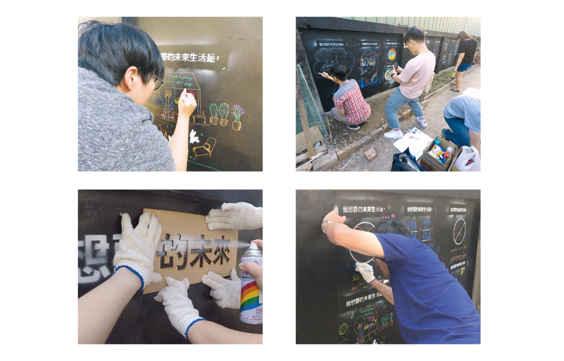
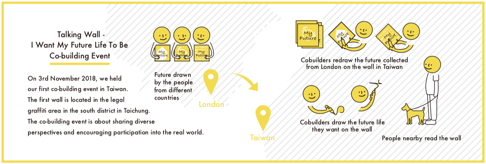
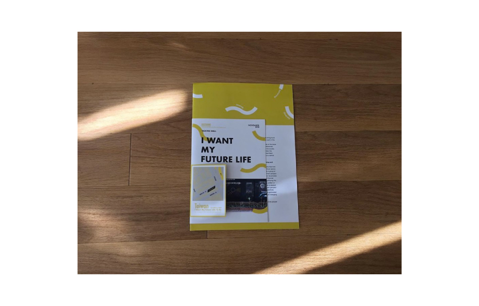
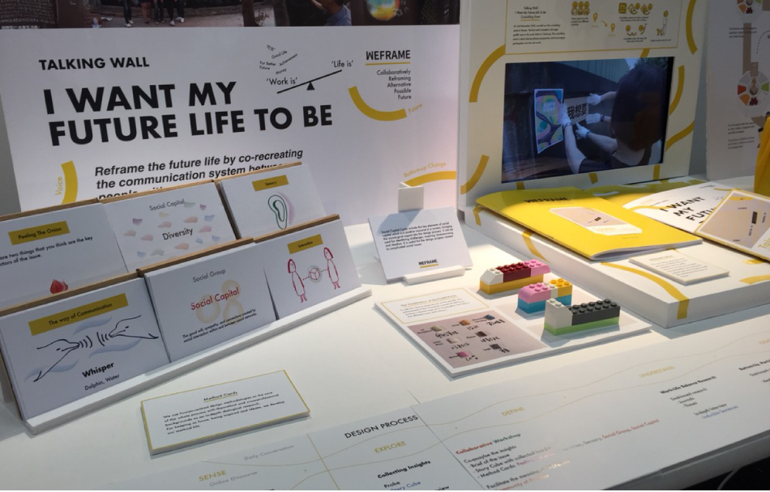

Talking Wall
- I want my future life to be
- Design Research
- Social Design
- Graphic Design
- Website Design
Challenge:
The anxiety of the future life in Taiwan can be sensed by daily conversation and online discourses among the international students or people who work abroad. The low confidence of the future in Taiwan makes many people avoid to go back. The information we have gotten is about the salary, housing price, working cultures, the quality of life and some personal reasons such as forced marriage. The unpreferred situations has resulted the high amount of people keeping going to study abroad or working abroad for living in another country. While the top-down change has its own limitation, which causes the existing problem in Taiwan remains for a long time. So how can we use design to respond to the problem and build the confidence in the future of Taiwan?
‘I want to try my best to keep away from going back. It is an escaping journey.’
‘Why don't you make something that keep us in London, rather that going back to Taiwan.’
Work Process
Understanding:Interviews & Workshop In order to keep the objectivity in the process, I firstly used 'Story Cubes' to collect insights. The reasons to use story cubes was to create a relaxing atmoshpere through the interview and get the ball rolling when people was asked a big question. After collected the cubes, I managed a workshop to collaboratively analyse the collected insights and combine with the current policy in Taiwan. Also, I designed toolkits from sociological aspects and human-centred aspects for people who haven't try brainstorming before. The people who participated are from different professions and have different opinions about the issue. Then, during the discussion, I had found the common ground when I interviewed people and what I have been hearing in daily life. So the problem that I can respond to in this issues was defined as 'Working - Life Balance'.
So, I started an in-depth interview stage, which was about working - life balance. There were 12 people who participated in, that I set into 2 groups to explore whether the problem was important. One group was people who stay in Taiwan, while the other group was people stay abroad. From the interviews and the journals about the topics, I used the 'Frame? then Reframe' method to zoom into the elements of the balance and find the one that can be reframed.
Theoretical Knowledge: Drive, SECI Model
Outcome:
Let's talk: The Perspective of Life and Wall In order to reframe the balance, I strived to bring more discussion and possibilities into what people see or imagine their future lives, rather than talking about works. Based on the concept of SECI Model, I designed a co-creation communcation system.
As this is not a well-discussed topic in Taiwan, I held a playful workshop as a realisation of discussion to encourage more discussions in the city. For creating a encouraging atmosphere, for the people who were shy to express their imagination, I shared serveral imaginations of the future collected from London and invited co-builders to redraw the one they picked. After that, they drew their own on the wall!

Why I choose the wall? To create an inclusive platform, wall becomes a first choice when it comes to inclusive and meaningful. Walls have their connations in the time, space, culture and generation.

‘It makes me feel surprised that there are still so many passionate people here.’
‘ ‘Participating in the whole process and co-building the wall makes me feel confident.’
‘ ‘I will take a walk to here and see the drawings again after today.’
Talking Wall - I Want My Future Life To Be is a co-reframing project aimed to rethink the future life by co-recreating the wall with the topic that is an interwoven issue from individual to social. Also, it is expected to bring the positive influence of social participation and citizen power to the current society that most of the people have low confidence in the future.
On 3rd November 2018, I held the first co-building event in Taiwan. The first wall is located in the legal graffiti area in the south district in Taichung. The co-building event is about sharing skills and perspectives into the real world.
Event Detail
From 10:00 am to 17:00 pm, we have people who helped us from the beginning of the event, including cleaning the wall, painting it into black background together and spraying the topic hallowed on the wood boards on the wall. Since not everyone has been tried spraying on the wall, the process was exciting and full of fun.
Sharing PerspectivesThere are various future lives from different people from different culture pre-collected from London and brought to Taiwan. After the wall was prepared, people who participated in can choose the pre-collected future life drawing that they are going to redraw on the wall. While people in Taiwan redrew the pre-collected future life drawing on the wall, the cross-cultural sharing was happening, even if people are still in different parts of the world.
We also shared the redrawn version of future lives back to the people in London, they feel surprised by the person who drew in Taiwan, for example, a South Korean girl whose original future life is surprised by Vitamin C who redrew hers on the wall and chose and coloured the future, especially the outlined dogs on the original version was coloured in to white cute poppies . ‘Wow, how did she know I like the white dogs!’ the South Korean girl said. The redrawing process in this stage can also be used as a warm-up for some people who have no confidence to draw their own.
Combination and InternalisationAfter redrawing, people started to draw their future lives on the wall. It was amazing to see people who first have no idea what to draw started to draw, and some people cannot stop drawing. ‘I will take a walk to here and see the drawings again after today.’ some people who participated in said. ‘It is also obvious that many future lives of the young generation are different from mine and more abstract that I have to think more about it’ a middle-aged woman who participated in said. By raising the difference of perspectives, the cross generational differences also reveals in a relaxing way.
‘It makes me feel surprised that there are still so many passionate people in Taiwan.’ When we were drawing, some people who lived nearby or passed also came here to read the words and take a look at the drawing on the wall. Some people also came twice. It was great to see the diversity shown and shared at that day, which also gives us the different perspectives of our society in Taiwan.
The Edition of the Event
The Exhibition of the Event
